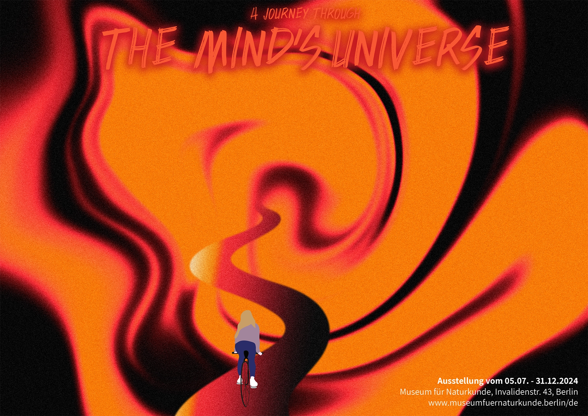
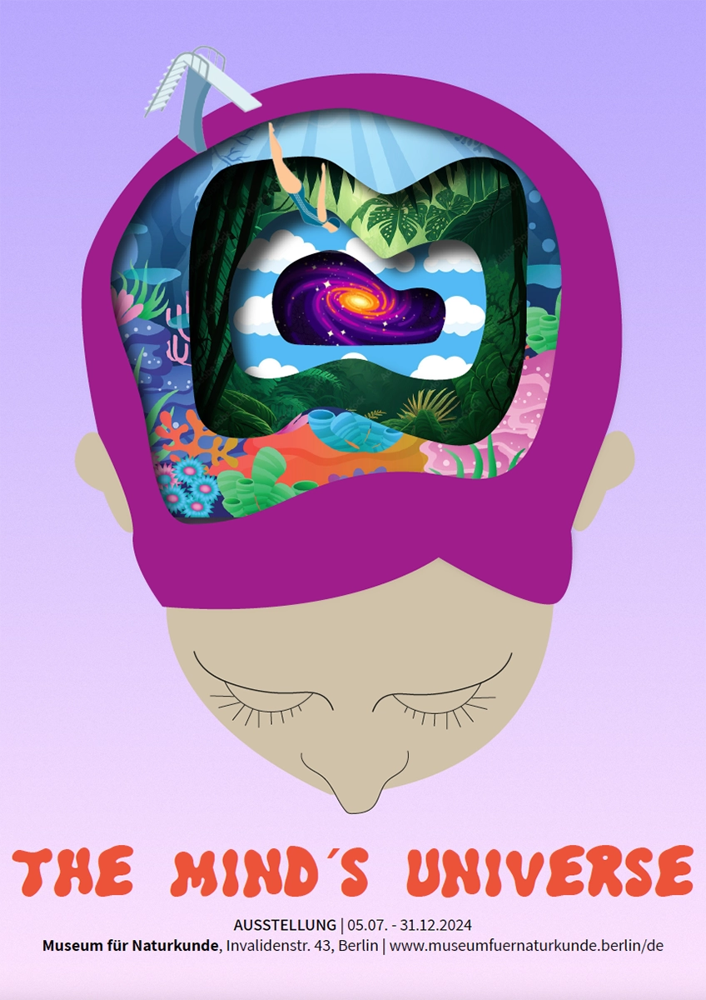

Diese Plakate sind im Rahmen eines Projektes entstanden, in dem wir 3 Plakate zur fiktiven Ausstellung mit dem Thema "Träume" entwerfen sollten.
Plakate

Die Gradients habe ich in Adobe Photoshop erstellt, die Fahrradfahrerin in Illustrator.
Bei diesem Plakat habe ich eigene Fotografien collagiert und mit der Adobe Firefly KI eine "dystopisch traumhafte" Wasserrutsche erstellen lassen - mein persönlicher Favorit!

Dieses Plakat wurde komplett in Illustrator erstellt.